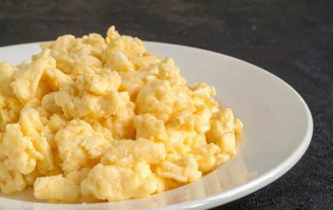

Huevo picado

Descripción
El huevo picado es un platillo muy sencillo pero altamente nutritivo. Lo puedes comer solo o acompañado de otros alimentos como pan, tortillas, gallo pinto, etc.
Ingredientes:
- Huevos
- Aceite
- Cebolla
- Sal
Pasos:
- Pica la cebolla hasta que quede muy fina
- Pon el aceite a calentar en una sartén
- Echa la cebolla y dejala freir hasta que queda bien doradita
- Agrega los huevos e inmediatamente la sal a tu gusto
- Mantente revolviendo los ingredientes para que el huevo no se pegue a la sartén y para que quede picado
- Retiralo del fuego cuando ya esté bien cocinado